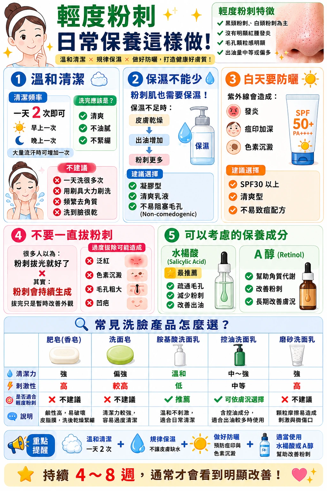

圖卡版本紀錄
輕度粉刺日常保養這樣做
這張圖卡已於 退出主要目錄，舊網址保留供查找。
清潔、保濕、防曬與其他照護圖卡重複；保養品推薦及乾燥與出油的因果敘述需重新整理。
請優先閱讀目前版本
展開歷史圖卡（內容未更新）
以下保留退出時的圖片，供版本比對；請優先閱讀上方目前版本。

圖卡版本紀錄
這張圖卡已於 退出主要目錄，舊網址保留供查找。
清潔、保濕、防曬與其他照護圖卡重複；保養品推薦及乾燥與出油的因果敘述需重新整理。
以下保留退出時的圖片，供版本比對；請優先閱讀上方目前版本。
